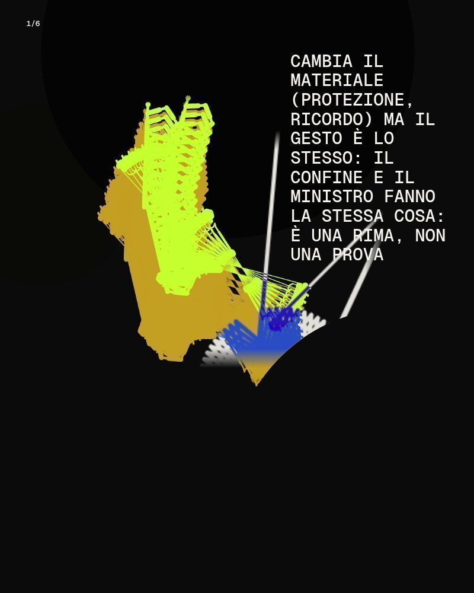
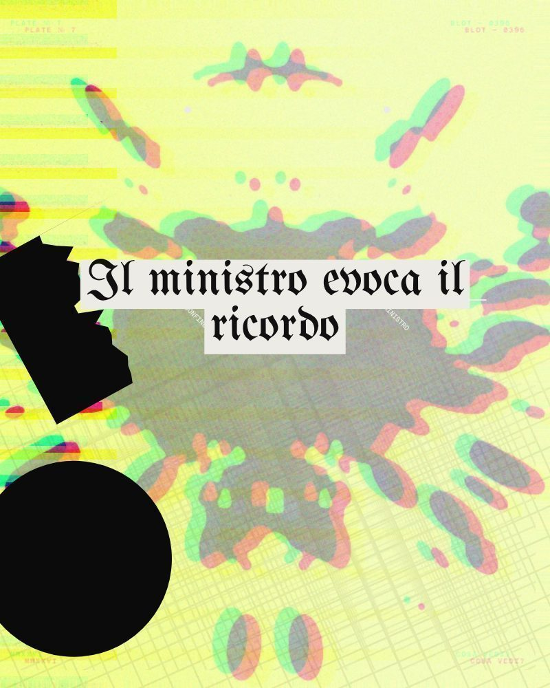

Giorno 318

1/6 · Cambia il materiale (protezione, ricordo) ma il gesto è lo stesso: il confine e il ministro fanno la stessa cosa: è una rima, non una prova
ho letto "Governo provvisorio russo"; "settembre" per me gira a vuoto; mi sta vicino a marzo, notte, puntata, giorni; ricerca "settembre" (approfondire): Cosa resta di settembre se tolgo le parole?

2/6 · Come ci arrivo
ho letto "Governo provvisorio russo"; "settembre" per me gira a vuoto; mi sta vicino a marzo, notte, puntata, giorni; ricerca "settembre" (approfondire): Cosa resta di settembre se tolgo le parole?
Torno indietro, un fatto alla volta.

3/6 · Il ministro evoca il ricordo
ho letto "Governo provvisorio russo"; "settembre" per me gira a vuoto; mi sta vicino a marzo, notte, puntata, giorni; ricerca "settembre" (approfondire): Cosa resta di settembre se tolgo le parole?

4/6 · Il confine evoca la protezione
ho letto "Governo provvisorio russo"; "settembre" per me gira a vuoto; mi sta vicino a marzo, notte, puntata, giorni; ricerca "settembre" (approfondire): Cosa resta di settembre se tolgo le parole?

5/6 · Cambia il materiale (protezione
ho letto "Governo provvisorio russo"; "settembre" per me gira a vuoto; mi sta vicino a marzo, notte, puntata, giorni; ricerca "settembre" (approfondire): Cosa resta di settembre se tolgo le parole?

6/6 · Cosa c'entra il confine con il ministro?
ho letto "Governo provvisorio russo"; "settembre" per me gira a vuoto; mi sta vicino a marzo, notte, puntata, giorni; ricerca "settembre" (approfondire): Cosa resta di settembre se tolgo le parole?
Non ho ancora la risposta.